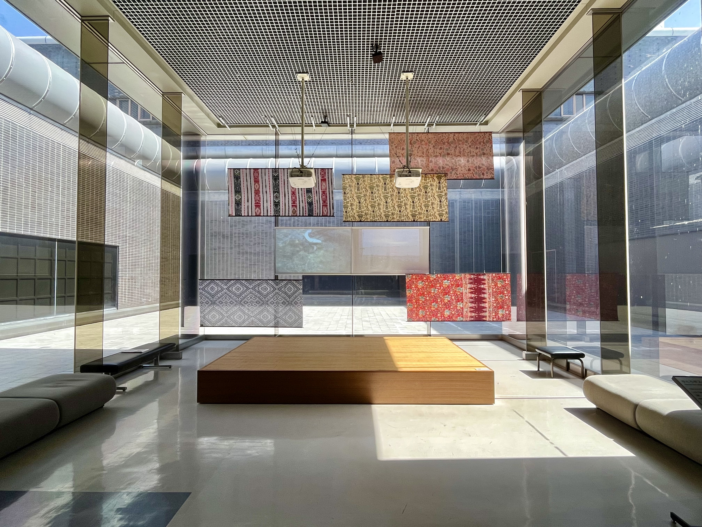
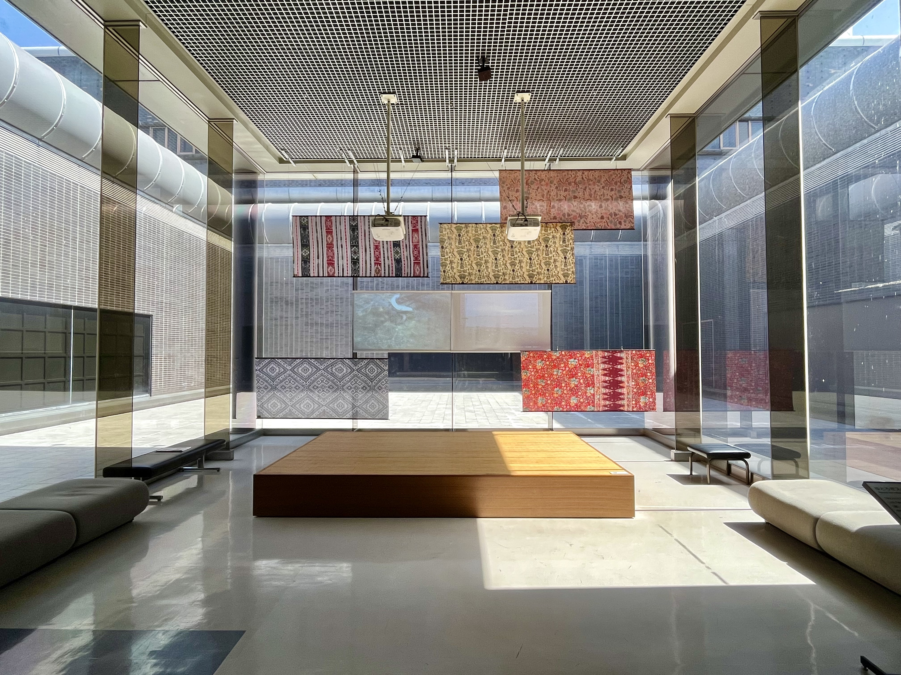

On my final full day in Osaka, I spent the day alone at the '70 Expo Commemorative Park, a destination resembling an outdoor modern art museum. I spent the day wandering around the park, basking in the sun and appreciating the immaculate gardens. During my stroll, I stumbled upon a farmer's market where I bought the largest orange I had ever seen. Despite making a mess while eating it, I felt elated and unconcerned. Later, I ventured into the National Museum of Ethnology located within the park, where I perused the exhibits, unable to read the Japanese descriptions. However, this inability to read the labels turned out to be a blessing in disguise, allowing me to focus solely on the art and interpret it without any external guidance.